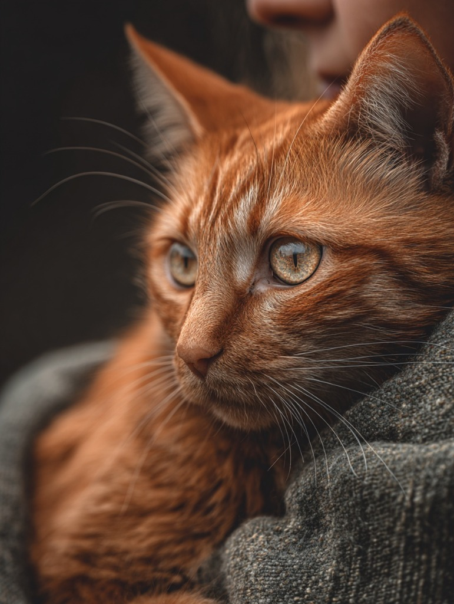
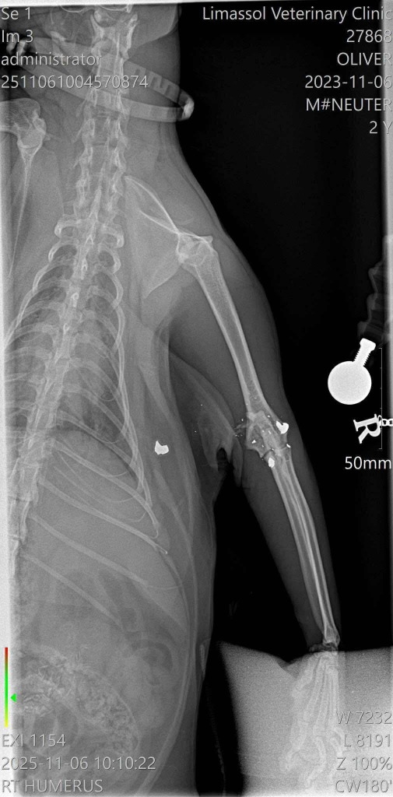
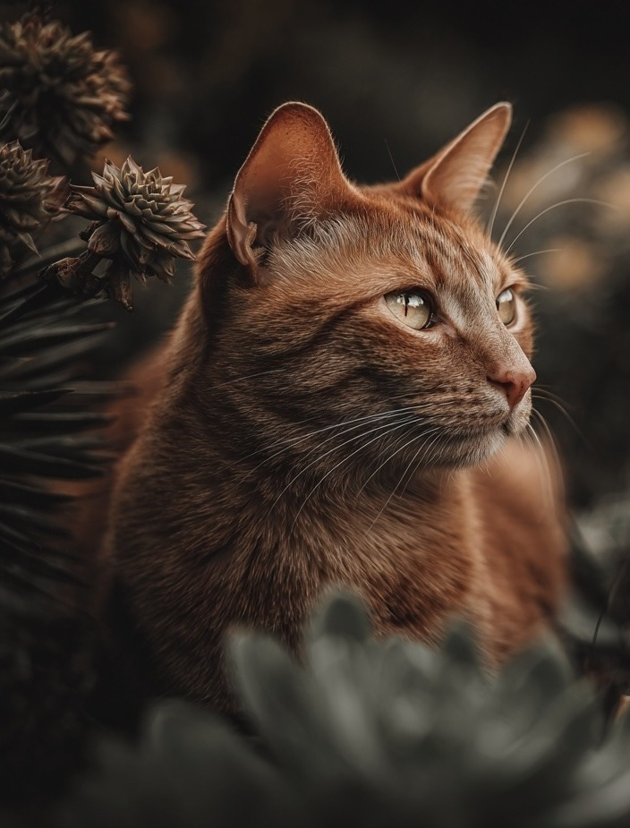
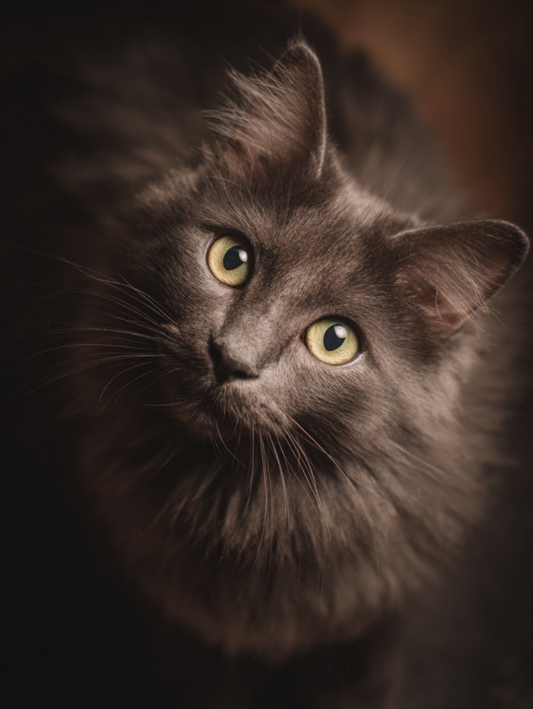
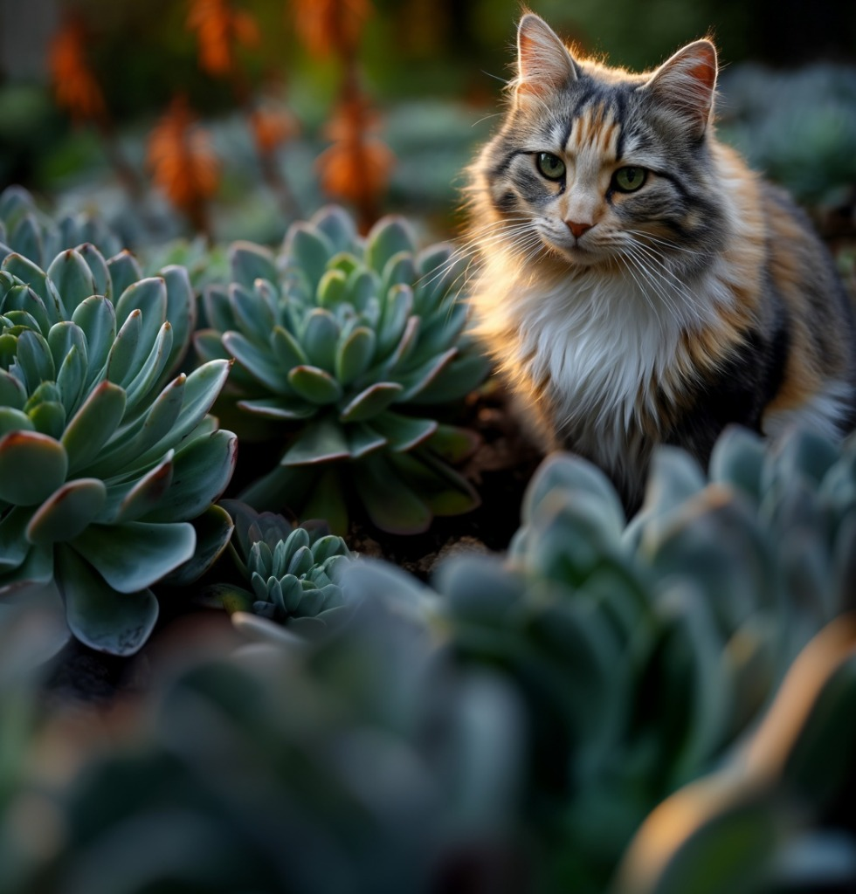
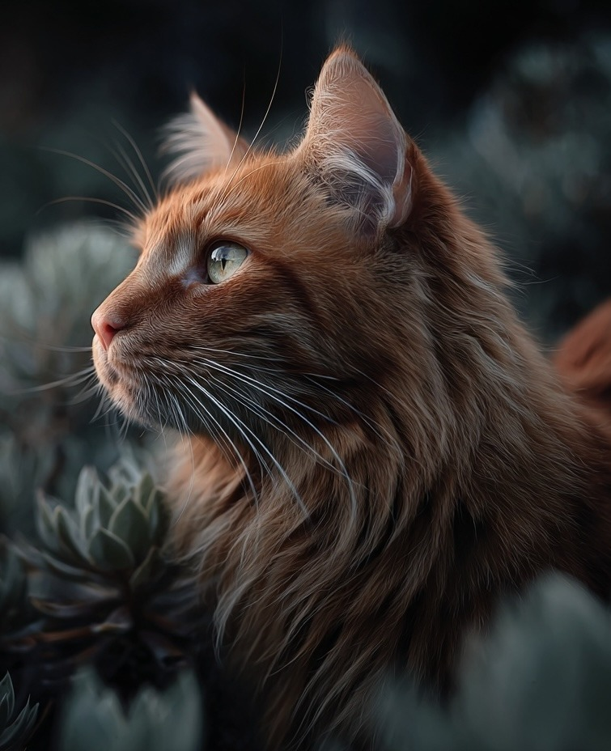
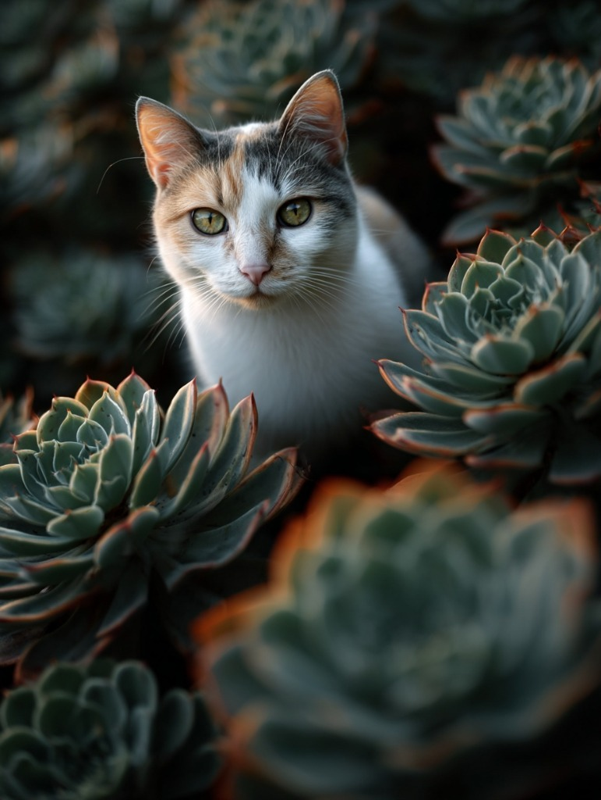

Our Blooms
These beautiful souls are waiting for their forever garden.

Splotch
He is red, he can never get enough pets.
Urgent Medical Case

Oliver
Recovering from surgery and needs a special friend.

Charlie
Charlie was found living next to a football field in Germasogeia.

Toshiba
Toshiba is Charlie's litter-mate and sibling to Eminem and Papa Doc.

Tillie Bird
Our beloved "Tillie Bird" and resident couch potato. Currently recovering in hospital.

Chili Pepper
Full of energy and loves to chase feather toys all day long.

Mabel Fish
"She's a very fishy girl." FIV+ sweetie who loves people.